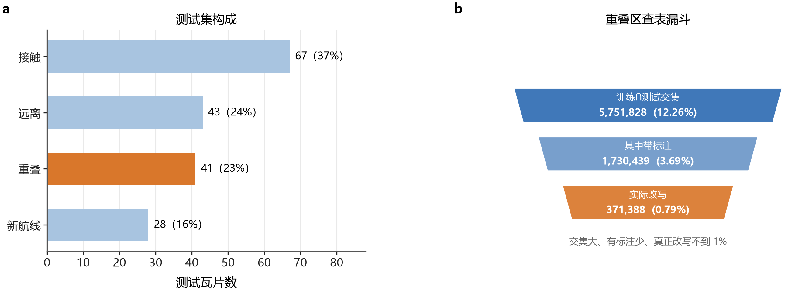
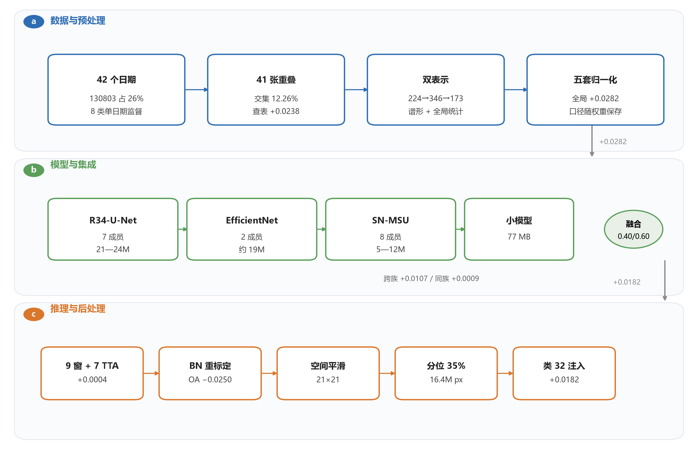
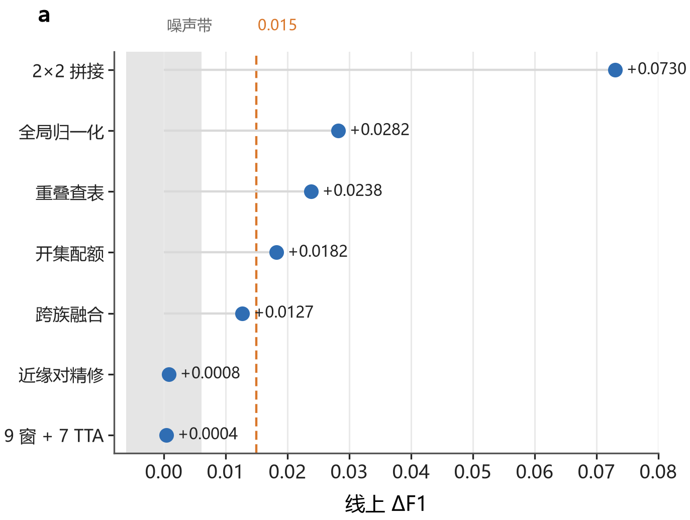
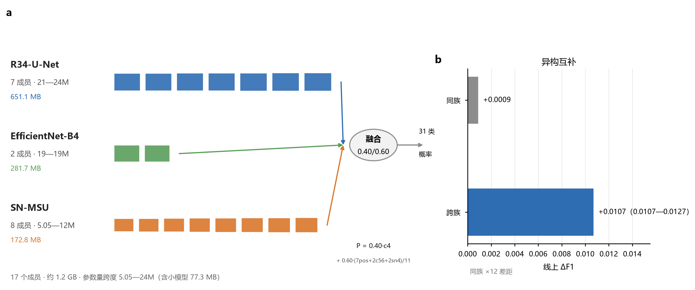
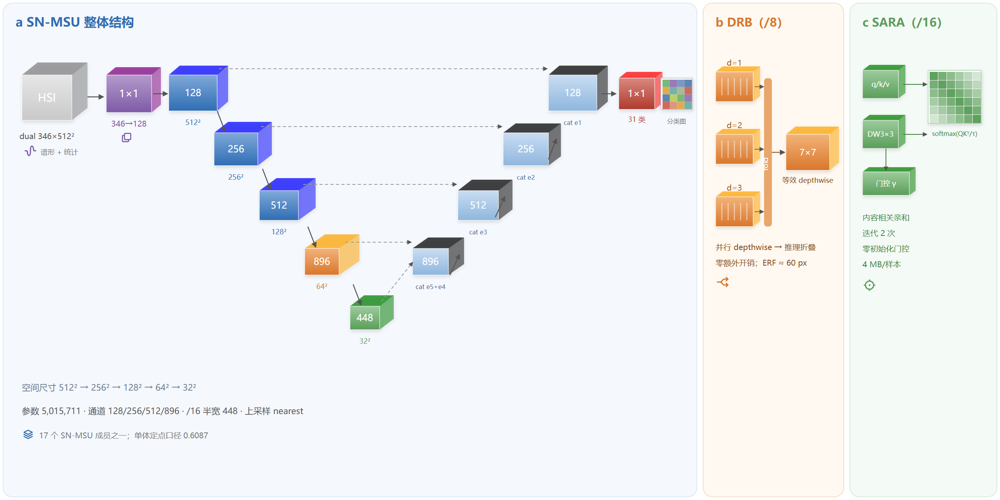
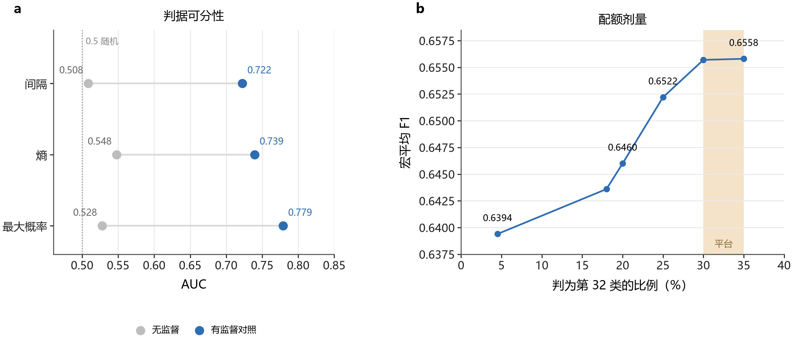
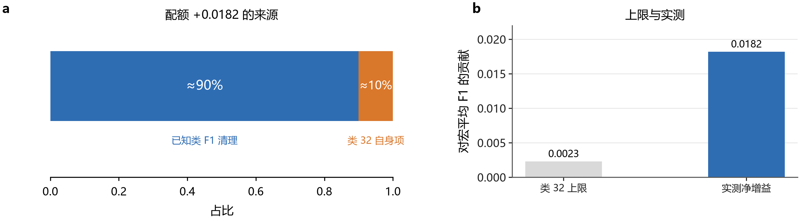
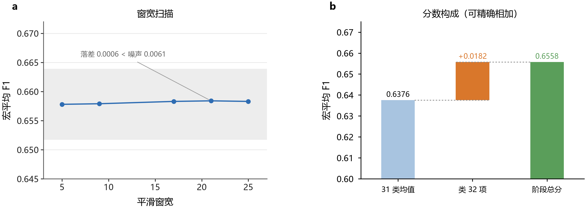

双高遥感影像精细分类的流程化实践：数据数据检查与利用、异构集成与开集配额
摘要
高光谱精细分类的难点、往往不在网络结构，而在观测的条件、数据划分与评测归一化方案；本文以 2026 年双高遥感影像精细分类竞赛为对象，给出一条从数据检查到提交前校验的七个阶段流程。赛题包含 562 张 512×512 像元、224 波段的高光谱瓦片，训练 383 张、测试 179 张，类别为 31 个已知类加 1 个由 21 个未见作物细分种合并的未知类，指标为宏平均 F1。官方的的微调基线为 0.3594。
本文沿四个方向组织：数据样本分析、数据预处理、异构模型骨干、训练后处理；数据与预处理用 2×2 邻域拼接补上下文，用重叠区查表利用划分缺陷，用日期分层诊断非平稳性；表示侧用 224→346→173 的双表示与五套归一化归一化方案；模型与集成用 4 个族系、17 个成员、约 1.2 GB 权重的异构集成；推理与后处理用 9 窗重叠、7 次二面体增强与批归一化重标定；开集侧把检测未知类改为为未知类分配配额。
最终提交取得宏平均 F1 0.6584、OA 0.6825、相对官方基线提升 0.2990；同期对照为 0.6570，两者相差 0.0014，小于单次提交分辨率 ±0.002，本文只陈述读数，不做优劣主张。全文把增量分为可精确相加的可精确分解部分与含 ±0.0061 噪声的实测增量部分，并逐项标注是否超过 0.015 的结论门槛。
关键词：高光谱精细分类；数据数据检查与利用；异构集成；开集识别；宏平均 F1；测量学
1 引言
1.1 赛题与三层难点
赛题给出 562 张高光谱瓦片、每张 512×512 像元、224 个光谱波段，空间分辨率 0.5—5 m；训练集 383 张，测试集 179 张，需要输出像素级类别，共 31 个已知类与 1 个未知类，指标为宏平均 F1。官方基础模型微调后的读数为 0.3594。
这个任务难在三处，三处互不独立。
第一层是观测条件非平稳；训练瓦片跨越 42 个成像日期，其中 130803 一个日期占 99 张（26%），另有 20 个日期各自不超过 5 张。作物在不同物候期的谱形差异、常常大于不同作物在同一物候期的差异；按日期统计、有 8 个类别在瓦片级只被单一日期监督过；模型对这些类学到的，可能只是那一天的反射率，而不是那个作物。
第二层是未知类的构造方式特殊；第 32 类不是语义相远的新地物，而是由 21 个训练期完全不可见的作物细分种合并而成，与已知类共享物候与谱段。它不是外来的东西、而是同一套标签空间被重新划分的结果；这一点直接决定了第 7 章的全部结论。
第三层是反馈极度稀缺；全程只有若干次提交机会、没有验证集反馈，也没有可反复查询的线上接口；一次提交就是一次不可撤销的测量。
1.2 为什么写流程而不是新模块
在给定基线与数据条件下、本文没有提出新的网络结构，也没有提出新的损失函数；实际产生增量的地方，几乎全部是工程决策：是否把 2×2 邻域拼起来，是否利用训练与测试之间的重叠区，用哪一套归一化归一化方案，要不要在目标影像上重标定批归一化统计量，把多少比例的像元判成未知类。
这些决策有两个特点、使它们值得被单独写成一篇流程论文；其一，增量差异巨大且与直觉相反：数据与预处理单步可以带来 +0.0730，而推理与后处理精修往往只有 +0.0004。其二，测量本身的噪声与要测的效应同量级：同一配置换种子，读数波动约 ±0.0061，与许多有效改动的幅度相当。
因此读者真正需要的不是又一个融合方法、而是三件事：哪一步值得抄，每一步值多少分，这个分数是否超出了噪声；本文按这三件事组织。
1.3 与既有工作的边界
同一批实验已有一篇方法型论文、讨论双表示、四族融合与两段分数指标分解；本文与它的分工是明确的：方法推导不在本文复述，涉及融合式、表示维度、指标分解恒等式时一律引用该文；本文只承接它的结论，把篇幅留给流程、增量归因与测量学问题。两篇共享数据与实验记录，但叙述对象不同，引用时需显式说明，以免被视为重复发表。
1.4 三条贡献
第一、一条带噪声判据的工程链；从数据数据检查与利用到提交前校验共七个阶段、每一步给出线上增量，并标注它是否超过 ±0.0061 的噪声底；读者可以直接判断哪一步值得在自己的任务上复刻。
第二、一份诚实的增量记录表；本文区分两类数字：可精确分解部分由分数定义直接推出、精确、可加；实测增量部分由线上提交实测，含噪声、不可加；二者混在一张表里相加，是这类复盘文章最常见的错误，本文明确拒绝这种做法。
第三、开集问题的重新表述；把检测未知类改为为未知类分配配额、并给出三条可检验命题；其中最硬的一条是收益分解：由于预测配额比例远大于真实配额比例，判成未知类的收益中约九成来自已知类的精度改善，只有约一成来自未知类自身。这个分解可以用两个计数当场复算。
2 任务、数据与评测归一化方案
本章不描述方法、只描述测量环境；后文每一个增量数字的可信度，都由本章的三个事实决定。
2.1 数据集与划分
数据集为 562 张机载高光谱瓦片、每张 512×512 像元、224 个光谱波段，空间分辨率 0.5—5 m；训练集 383 张、测试集 179 张，类别为 31 个已知类加 1 个未知类。未知类由 21 个训练期不可见的作物细分种合并而成；官方给出的基础模型微调基线为宏平均 F1 0.3594。
表 1 汇总了任务的基本归一化方案；本文后续所有读数都以这张表为基准，不再重复。
表 1 任务与数据口径
| 项 | 值 |
|---|---|
| 瓦片总数 | 562（训练 383 / 测试 179） |
| 单瓦片尺寸 | 512×512 像元 |
| 光谱波段 | 224 |
| 空间分辨率 | 0.5—5 m |
| 类别 | 31 已知 + 1 未知 |
| 未知类构造 | 21 个未见作物细分种合并 |
| 指标 | 宏平均 F1，OA 辅助 |
| 官方基线 | 0.3594 |
| 最终 S 侧 | 0.6584（OA 0.6825） |
| 同期 P 侧 | 0.6570 |
2.2 四十二个日期带来的非平稳性
按成像日期统计、训练瓦片覆盖 42 个日期，但分布极不均匀；表 2 列出与后文决策直接相关的几项。
表 2 训练日期的非均衡
| 统计项 | 数值 |
|---|---|
| 最大单日期占比 | 130803 占 99/383 张（26%） |
| 瓦片数 ≤5 的日期数 | 20 个 |
| 仅单一日期监督的类别（瓦片级） | 8 个 |
| 仅单一日期监督的类别（像元级） | 6 个（待核） |
| 含多期观测的训练 / 测试瓦片 | 54/383 与 3/179（待核） |
这张表解释了两件事；第一，按瓦片随机划分会系统性地把同一日期的影像同时放进训练与测试，模型可以靠记住那天的反射率通过验证，而这与真实部署场景不符。第二，补时相在本赛制下性价比不高：测试侧只有 3 张瓦片含多期观测，训练侧补再多期，也无法在测试分布上兑现。
2.3 训练集与测试集的空间重叠
按测试瓦片与训练瓦片的接触关系、179 张测试瓦片可分为四类：接触 67 张、远离 43 张、重叠 41 张、新航线 28 张；重叠瓦片占比接近四分之一，其中存在像元级重叠。

这既是数据集的缺陷，也是第 4 章一条工程手段的来源，同时也是 2.4 节全部测量学问题的根源。
2.4 代理指标的选择偏差
在没有线上反馈时、团队通常自建一个验证尺；本文的做法是：用 43 张远离型测试瓦片手工标注一个代理验证集；问题在于，这个尺与被评对象不是独立的。
最直接的证据是一次对照：同一份提交，包含重叠查表与不包含重叠查表，在自有代理尺上的读数为 0.6701 与 0.9032，对应 OA 0.8251 与 1.0000。只要在提交里加入查表这个动作、代理尺的读数就会跳到接近满分，而线上读数并不会；原因是代理集里有大量像元本来就与训练集重叠，查表直接把它们答对了。
由此产生三个可复现的现象；跨族融合的相对增益、本地代理尺为 −0.0489，线上为 +0.0107，符号相反；领先幅度被放大，约 6.7 倍（待核）。代理尺对 138/179 张测试瓦片完全无约束，即零覆盖。
结论是：本地代理指标只能用于同族模型之间的粗筛、不能用于跨对象排序，更不能用于报告绝对值；本文后续所有增量一律以线上读数为准，代理尺只在第 5 章讨论族内选择时出现。
2.5 宏平均归一化方案的三个后果
指标是宏平均 F1，这在本题上有三个直接后果，它们共同构成第 7 章的前提。
第一、未知类权重仅 1/32；一个类做砸了、最多损失 3.125 个百分点；做对了，也只值 3.125 个百分点；它救不活全局，但也吃不掉别人。
第二、未知类真值占比极低；真实未知像元 623,449 个、占全部像元 1.33%，占已标注像元 4.47%；这是一个先验极低的类。
第三、宏平均会系统性过度预测低基频类别；这是 F1 阈值优化的经典结论[3]：当某标签基频很低而分类器信息量不足时，最大化宏平均 F1 的最优行为是大量预测该标签，而非只在确信时预测。
第三点直接决定了第 7 章为什么最终把 35.00% 的像元判成未知类这一看似反常的选择；它不是调参失控，而是指标结构逼出来的结果。
2.6 读数分辨率与噪声底
读数分辨率与噪声底是两个不同的量；单次提交的分辨率约为 ±0.002，描述的是同一份预测在提交环节的抖动；种子噪声底为 ±0.0061，描述的是训练与推理配置变化带来的波动，后者更大，也更接近方法差异的真实量级。因此本文在比较两个读数时先看差值是否超过 ±0.002，再看它是否超过 ±0.0061，最后才看它是否达到 0.015 的结论门槛，三层判据分别对应提交、实验与结论。
3 总体流程
3.1 七个阶段
全流程按数据先于模型，解码先于集成的顺序组织为七个阶段；图 2 给出阶段，动作与线上增量；增量之间不可相加，原因见 3.4。

这个排序不是最优排序，而是信息约束下的排序；在没有任何线上反馈时，只能先把确定性的，可离线验证的事情做掉；对模型结构的探索放到中期；解码与精修的微调放到最后，因为它们的效应量已经接近噪声，必须在噪声已知的前提下才敢判断。
3.2 七道提交前校验
提交前的校验被固定为七项，任一不通过即不允许生成提交文件。
- 逐像元复算：本地重算整幅预测图，与提交文件逐像元比对。
- 完全复刻：同一配置重跑一次，要求与上一次结果 100.0000% 一致。
- 权重清单与归一化方案一致：每个权重的归一化归一化方案必须与训练时一致，归一化方案表随权重一起保存。
- 配额比例标定：未知类配额比例按第 7 章的标定曲线换算，禁止直接填比例。
- 分辨率与类别编码：输出尺寸，类别编号，背景值三项对齐。
- 失败面检查：对已知的空洞，裁切边界，无数据区域做专项检查。
- 版本冻结：生成提交文件后立即冻结配置与权重哈希，后续实验不得复用同一版本号。
七道提交前校验的价值不在于提高分数，而在于让失败可归因；在多轮提交中，有两次分数异常都因为提交前校验 1 与 2 被定位为编码问题而非模型问题，避免了在错误方向上继续调参。
3.3 线上记录表与噪声底
由于没有验证集，全部判断都建立在线上提交上；为此维护一份线上记录表：每次提交记录配置，改动点，读数，与上一次的差。
对同一配置更换随机种子重复提交，得到的读数波动约为 ±0.0061；单次读数的系统偏差约 +0.007；由此确立两条使用规则。
第一、任何小于 0.015 的增量不单独作为结论；0.015 约为噪声底的两倍，留出安全余量。
第二、只有刷新历史最佳的提交才算一次有效证据；在该记录表中，约 40 次线上记录里只有 8 次刷新了最佳（待核）。

这两条规则在第 4—6 章反复起作用；它们让看起来有效的改动，如 +0.0004 的增强、+0.0008 的精修，被明确标注为工程优化而非增益，也避免了把多个微小改动叠加后误认为一个大改进。
3.4 可精确分解部分与实测增量部分不可相加
本文出现的所有分数变化分为两类；可精确分解部分由宏平均 F1 的定义直接导出、精确、可加、可复算；实测增量部分由线上提交实测，含 ±0.0061 噪声，不可相加。
例如31 类均值项 + 第 32 类项 = 最终宏平均 F1是恒等式，两项严格相加等于总分；而查表 +0.0238、归一化 +0.0282、配额注入 +0.0182是线上记录，三者相加并不等于总提升，因为改动之间存在交互，且各自都是在不同基线上测的。
本文在每张表下都标注它属于哪一段；把两段混在一列相加，是同类复盘文章最常见的错误。
3.5 记录表里的一个对照
记录表里有一次典型对照可以说明门槛的作用；同一套融合概率，只把后处理里的空间平滑窗宽从 5 改到 21，线上读数从 0.6578 升到 0.6584，差值为 0.0006；若没有噪声底，这个差值会被写成一次有效改进，而实际上它只是窗宽在平台内的轻微移动。把这类差值记成工程优化、不记成增益，记录表才能保持可加性之外的可读性。
4 数据检查与利用
本章三件事都发生在模型训练之前、但对分数的贡献大于后文全部模型与集成改动之和；这也是本文最想强调的一条经验：在高光谱精细分类任务里，先问数据能挖什么，再问模型能改什么。
4.1 2×2 邻域拼接
原始样本是单张 512×512 瓦片；第一项改动是把空间上相邻的 2×2 瓦片拼成 1024×1024 再切块训练，使每个样本含更完整的田块上下文。
表 3 2×2 拼接的读数
| 配置 | 宏平均 F1 |
|---|---|
| 单瓦片 | 0.4855 |
| 2×2 拼接 | 0.5585 |
| 增量 | +0.0730 |
必须说明的混淆：这次实验同时把训练瓦片数从 312 增加到 383，因此 +0.0730 不能全部归因于拼接本身，其中一部分来自样本量增加。本文的处置方式是：报告该数字，但在讨论增益来源时只主张拼接与样本量共同作用，不单独归因。
从机制上看、拼接带来的是上下文；单张 512×512 在亚米级分辨率下约对应 1—2 个田块、而田块边界是判别作物的重要线索；这一点与后文空间先验的处理方式一致。
4.2 重叠区查表
如 2.3 节所述、41 张测试瓦片与训练集存在像元级重叠；对这些像元，训练集的标注可以直接查询并覆盖模型预测。
整个漏斗如下：训练与测试的交集为 5,751,828 像元，占全部像元 12.26%；其中有标注的为 1,730,439 像元，占 3.69%；实际被改写的为 371,388 像元，占 0.79%。被改写的像元占已知类像元的 21.5%、分布在 36 张瓦片上；也就是说，交集很大，但有标注的不多；有标注的还要与模型预测不一致才会被改写，最终真正生效的不到 1%。
在线上、这一手段的增益随基线升高而衰减；低基线约 0.55 时为 +0.0411，中基线约 0.59 时为 +0.0326，高基线约 0.63 时为 +0.0238。
定性必须明确：这是对数据划分缺陷的规则内利用、不是方法创新；它的增益完全依赖存在重叠这一前提；若换成干净划分、收益为 0；本文把它写进来，是因为读者在真实竞赛中会碰到同样的问题，需要知道它值多少分，以及为什么它的增益会随基线衰减。基线越强，模型本来就能答对那些像元，可改写的空间越小。
4.3 多时相与类-日期耦合
训练侧有 54 张瓦片含多期观测、测试侧只有 3 张（待核）；理论上补时相可以缓解 2.2 节的非平稳性，实际投入产出比很低：测试分布里几乎没有多期样本，训练侧补期无法在测试上兑现。
更有价值的是按日期做诊断；把验证集拆成同日与跨日两组、同日组的读数显著大于跨日组；早期实验中相差约 2.3 个百分点，第三轮扩大到约 9.1 个百分点（待核）。这个差距量化了模型对日期的依赖程度，也解释了为什么单纯堆模型深度收效有限。
4.4 本章小结
数据与预处理可迁移经验只有两条；第一、先检查划分是否自洽，是否存在重叠、是否按日期随机，这决定了你的验证尺是否可信；第二，上下文的收益通常大于结构改动，在亚米级分辨率下尤其如此。
至于查表本身，它是利用缺陷，不属于可复用的方法。
5 表示与模型族
5.1 双表示：从 346 通道回到 173 波段
原始数据是 224 个反射率波段。直接送入网络有两个问题：一是不同场景的整体辐亮度水平不同，同一个作物在不同影像上的绝对反射率可以差很多。二是逐像元的谱形信息被绝对量掩盖。
采用双表示：一路取全局统计量归一化后的谱，一路取逐像元 L2 归一化后的谱形，两路拼接得到 346 个通道，再经固定投影回到 173 个波段。这一步不是新结构，但在本任务上是后续所有归一化实验的前提；没有双表示，用哪一套统计量做归一化这个问题无从讨论。
5.2 五套归一化归一化方案
归一化归一化方案被显式做成可切换的五种：按瓦片统计，按全局统计、固定线性、双表示原始、双表示全局；它们的结果差异不小；全局归一化相对默认归一化方案的线上增益为 +0.0282，替代归一化方案（全局变体）为 +0.0325。
这条经验值得单独强调：归一化方案必须与权重一起保存；同一份权重配错归一化方案、读数可以低一个数量级；而权重文件名里若不写归一化方案，复现时几乎必然出错；本文在七道提交前校验中专门为此设了第 3 道。
5.3 四个族系、十七个成员
成员池不是同质模型堆叠、而是四个族系；R34-U-Net 7 个成员，参数 21—24M，权重约 651.1 MB；EfficientNet-B4 2 个成员，参数约 19M，权重约 281.7 MB；SN-MSU 8 个成员，参数 5.05—12M，权重约 172.8 MB；其余小模型合计约 77.3 MB。合计 17 个成员，约 1.2 GB 权重。
参数量跨度接近 5 倍（5.05M—24M）、这是有意为之；不同容量与不同感受野的模型在同一像元上犯的错不完全重叠，这是后文跨族互补的前提。
表 4 成员池构成
| 族系 | 成员数 | 参数量 | 权重体积 |
|---|---|---|---|
| R34-U-Net | 7 | 21—24M | 651.1 MB |
| EfficientNet-B4 | 2 | 约 19M | 281.7 MB |
| SN-MSU | 8 | 5.05—12M | 172.8 MB |
| 其余小模型 | — | — | 77.3 MB |


5.4 异构互补是真机制，加权平均不是
这是本文第二节想强调的经验：融合的收益来自错误不相关、而不是来自平均这个操作本身；为此做了一组配对线上记录；跨族组合的线上增益为 +0.0107 / +0.0127，样本为 8 次配对；同族组合为 +0.0009。差距接近一个数量级。
同族模型共享骨干、共享数据增强、共享训练日程，它们的错误高度相关，平均之后抵消不掉；跨族模型在归纳偏置上不同，卷积感受野、光谱原生分支、下采样策略各不相同，错误才有互补性。
这条结论直接指导了成员池的取舍：宁可减少同族成员、增加族数，也不要在一个强族里堆很多个几乎一样的模型。
5.5 概率级融合与配额比例
最终推断采用概率级加权平均，不做硬投票：
P = 0.40 · c4 + 0.60 · (7·pos + 2·c56 + 2·sn4) / 11
其中第 32 类不参与融合，在融合完成后单独注入，理由见第 7 章。
5.6 归属必须写清
上式中的 0.40 权重来自 P 侧模型；c4 族由 P 侧提供、其余为 S 侧；这一点在本文所有涉及最终结果的表述中都必须显式说明：最终提交不是单一团队的单方独立完成产物。相应地，本文在比较时只陈述两侧读数，不做优劣主张，见第 8 章。
5.7 成员池的成本
成员池的代价必须与收益一起看；17 个成员、约 1.2 GB 权重，单套测试概率的生成约 45 分钟，四套概率加融合与后处理构成一次完整提交；跨族带来的 +0.0107 是在这个成本下换来的，而同族再加一个成员的边际收益常为负。若部署环境只允许单模型，这套流程应收缩到两族各一个成员，把预算转给数据检查与配额标定，而不是继续堆同族权重。
6 推理解码与稳定性
本章三步的合计收益不到 0.005、全部属于把已知手段做对；之所以仍然写出来，是因为其中一步不做就会静默失败，而失败方式不报错、只是分数偏低。
6.1 9 窗重叠推理与 7 次二面体增强
推理时以步长小于窗宽的方式滑窗、相邻窗的重叠区按概率平均；对同一窗做二面体变换增强后取平均；变换共 8 个元素，即 4 个旋转乘 2 个镜像，但恒等变换只算一次，故实际前向 7 次。
9 窗重叠加 7 次增强的线上增量为 +0.0004；该数字落在噪声底 ±0.0061 以内、不构成增益；保留它的理由是稳定性：重叠平均能压掉单窗的边界锯齿，在多轮提交中减少了同一配置两次读数差异较大的情况。
6.2 批归一化统计量重标定
这是本章唯一的关键项；训练数据与测试影像的辐亮度分布不同、而批归一化的均值与方差是在训练集上统计的；若不处理，网络在测试影像上的激活分布整体偏移，读数会明显下降。
处理方式是：冻结全部权重、仅用目标影像的无标注数据，crop 512、60 步、循环采样，重新估计批归一化的均值与方差；做重标定为基准；跳过重标定会使 OA 下降 0.0250。
0.0250 远超噪声底、且这是单向的：不做只会变差，不会变好；它之所以危险、是因为流程里没有任何环节会报错；你会得到一个看起来正常但分数偏低的结果，然后误以为是模型不够强。
定性地说，这是测试时自适应的一类标准做法，不是本文的方法贡献，但它是本流程中最不能省的一步。
6.3 近缘对配对精修
对易混淆的类对、物候高度重叠的几个作物，单独训练一个二分类器，在融合结果上做局部修正；线上净增益为 +0.0008，局部（仅该区域）增益为 +0.0094，迁移性为 0.085，换场景后大幅衰减。
净增益落在噪声内、且迁移性很差；本文把它列为已被证否的方向：局部有效、整体无效、换域失效，三个特征同时出现时，说明它拟合的是特定瓦片的标注噪声而非可迁移规律。
6.4 本章小结
三步合计约 0.005，其中只有 BN 重标定一项是必须做，另两项是可以做。
给出这一节的目的是给读者一个成本判断标尺：在本任务上，推理与后处理的精修投入产出比极低；若时间有限，应当把预算全部投到第 4、5、7 章，而不是这里。
6.5 两类静默失败
推理与后处理还有一类失败不体现为分数下降、而体现为不可复现；批归一化统计量若在两次推理之间被覆盖，同一份权重会给出不同读数；空间平滑若在分位切分之后做，配额比例标定就会失真。本文把这两类问题写进七道提交前校验，而不是写进模型章节，因为它们属于流程一致性，不属于方法创新。
7 开集处理：从检测到配额
7.1 问题设定
第 32 类不是语义相远的新地物，而是 21 个训练期完全不可见的作物细分种合并而成，与已知类共享物候与谱段；它的真值像元为 623,449 个，占全部像元 1.33%，占已标注像元 4.47%；在宏平均中权重为 1/32。
这三个数字决定了后文的全部选择：先验极低，类很小；权重固定，做好了也只值 3.125 个点；构造特殊，与已知类不可分。
7.2 检测路线全线失败
按开集识别的标准做法[5]，先尝试给未知类打分，再设阈值；三种主流判据在折内代理集上的结果都接近随机。
表 5 开集判据的 AUC
| 判据 | 无监督 AUC | 有监督对照 AUC |
|---|---|---|
| 最大 softmax 概率 | 0.5276 | 0.7790 |
| 预测熵 | 0.5479 | 0.7394 |
| 间隔（max − second） | 0.5084 | 0.7224 |
三者都接近 0.5；为确认这不是实现问题，又做了三类替代尝试；专训第 32 类通道，真做检测，线上读数为 0.3865，大幅低于不改；将置信度最高 4% 前景改判 32，线上 0.5204，方向反了。四种排序替代，包括间隔，逐瓦片、场景级、专用通道，全部为负，幅度为 −0.0043 到 −0.0171。

至此可以判断：在这道题上，不存在更好的打分函数可以拯救检测路线。
7.3 对照实验：可分性由什么决定
上面的负结果容易被误读为没有调好；为此做一组对照：用同一套判据实现、但换成见过未知类监督的 32 类模型；结果从 0.51—0.55 跳到 0.72—0.78，见图 6。
两组用的是同一代理集、同一实现、唯一差别是训练时是否见过未知类；结论很直接：本题未知类的可分性由监督买来、不由不确定性买来；这与语义相近的新类会被高置信度误判的既有结论一致，本文的增量只是给出了它在本基准上退化到随机这一强度的读数。
7.4 转向配额注入
既然无法判断哪些像元是未知类、就换一个问法：该给未知类分配多少配额；选择性分类[4]把低置信样本拒识，配额注入把低置信样本改判为未知类，两者只差一个去向。
做法是取全图最大概率的分位：低于 35% 分位的像元统一判为第 32 类；为了让决策具备空间一致性，先对置信度图做 21×21 局部均值，再切分位。
31 类基线的线上读数为 0.6376；加入配额注入后为 0.6558、增量为 +0.0182；空间平滑本身只值 +0.0004 到 0.0010（待核），但它把逐像元的孤立误判变成成片的区域决策，在多轮提交中更稳定。
必须声明的前作：按配额比例注入并非本文首创[6]；同类基础模型的 HOCC 分支已用类先验参数控制被判为目标类的像元比例；本文的差别只在约束条件，无提示、无未知监督、单次提交额度，以及给出了收益的边界。
7.5 收益分解
这是本章最硬的一部分，因为它可以被第三方用两个计数当场复算。
设判为第 32 类的像元数为 N_pred、真实未知像元数为 N_true；本例中，N_pred 为 16,423,120，占全部像元 35.00%；N_true 为 623,449，占全部像元 1.33%。于是精确率 p = N_true / N_pred = 3.80%，召回率 r 不超过 1，F1_32 = 2pr/(p+r) ≤ 2p/(p+1) ≈ 0.073。类 32 对宏平均的贡献为 F1_32 / 32 ≤ 0.0023。
而实测净增益是 +0.0182；两者相减、约 0.016 只能来自已知类 F1 的改善；被改判的像元里有大量本会判错的已知类像元，把它们移出已知类，已知类的精确率上升。

结论是：注入的收益主要不是识别出了未知类、而是把已知类的模糊像元清理掉了；这与直觉相反，且可以直接用上式的两个计数验证。
7.6 配额比例平台
那么最优配额比例是多少；答案是：在这道题上不可复现。
前景配额比例 25% 与 27% 的读数同为 0.6443；平滑窗宽 5、9、17、21、25 的读数分别为 0.6578、0.6579、0.6583、0.6584、0.6583。配额比例差 2 个百分点读数完全相同；窗宽从 5 到 25 的总落差只有 0.0006，低于种子噪声 0.0061。

这说明存在一段平台：在一片区间内分数不敏感、测不出峰在哪里；因此正确表述不是最优配额比例为 35%，而是最优配额比例落在 25%—35% 区间，曲线在该区间内平坦，无法进一步定位。
7.7 三条可检验命题
表 6 三条可检验命题
| 命题 | 主张 | 证据 |
|---|---|---|
| C1′ | 当未知类是已知标签空间的同物候细分再划分时，无监督开集信号的判别力降至随机，因此改进打分函数这条轴在本任务上被关闭 | 7.2 / 7.3 的对照 |
| C2′ | 配额注入的净收益约九成来自已知类精度清理，约一成来自未知类自身项 | 7.5 的两个计数 |
| C3′ | 最优配额存在平台，平台宽度小于噪声底，故只能报区间 | 7.6 的配额比例与窗宽扫描 |
三条中、C2′ 最抗质疑，因为它可复算；C3′ 最有可能是本文独有的、因为它把平台宽度与噪声底放在一起比较；C1′ 则必须明确交代前作。Vaze 等人在 2022 年指出[1]闭集分类器本身就能做强开集识别，Lang 等人在 2024 年报告[2]了近缘类的熟悉性陷阱，本文的读数与这两条结论方向一致，强度更低，只到退化到随机这一档。
8 结果、归因与讨论
8.1 最终结果
最终提交（S 侧）取得宏平均 F1 0.6584，OA 0.6825；同期对照提交（P 侧）为 0.6570；两者相差 0.0014；本赛题单次提交的分辨率约为 ±0.002，即这个差值小于测量本身的不确定度。
因此本文的立场是：陈述两个读数，不做优劣主张；任何比对方高的表述都不成立；在 0.0014 这个量级上，两次提交谁高谁低更可能由提交本身的抖动决定，而不是由方法差异决定。
需要同时说明的是归属；两份提交共用同一个 0.40 权重，c4 族来自 P 侧，并与同一张 pos 概率图融合，逐像元差异约 6.67%。最终成绩不能表述为单一团队的单方独立完成成果。
表 7 最终结果与归属
| 项 | S 侧 | P 侧 |
|---|---|---|
| 宏平均 F1 | 0.6584 | 0.6570 |
| OA | 0.6825 | — |
| 差值 | 0.0014 | — |
| 单次提交分辨率 | ±0.002 | — |
| 0.40 权重归属 | P 侧 c4 族 | — |
8.2 两段指标分解不可相加
第 3.4 节区分了可精确分解部分与实测增量部分；这里把它落到具体数字上。
可精确分解部分，精确，可加：31 类均值项 0.6376 加第 32 类项 0.0182 等于 0.6558；两项严格相加等于该阶段总分，可逐像元复算。
实测增量部分，含噪声，不可加：2×2 拼接 +0.0730，重叠查表 +0.0238（基线 0.63 时），全局归一化 +0.0282，跨族融合 +0.0107，配额注入 +0.0182，近缘对精修 +0.0008，9 窗加 7 次增强 +0.0004。
把这些数字相加会得到一个远超实际总分的值，因为每项都是在不同基线上测的，且改动之间存在交互；本文的做法是把它们分列，并逐项标注是否超出噪声底。
8.3 三条测量学教训
这三条比任何一个具体增量都更可迁移。
其一，代理指标可以被后处理代理指标失真；同一份提交，加入查表后自有代理尺从 0.6701 跳到 0.9032，OA 从 0.8251 跳到 1.0000。代理尺与查表共享同一批重叠像元、所谓验证实际上是在验证自己；任何可被规则直接命中的后处理，都会污染用它评估的指标。
其二、跨对象比较在本地与线上可以符号相反；同一组跨族融合实验，本地代理尺给出 −0.0489，即融合变差；线上给出 +0.0107，即融合变好。若只看本地、会得出完全相反的方法结论；这说明代理尺只能用于同族内部粗筛，不能用于跨对象排序。
其三、单次读数的误差与要测的效应同量级；噪声底 ±0.0061、而大量改进的幅度在 0.0004—0.0010；因此本文设定小于 0.015 不作为结论的门槛。这不是保守，而是在该信噪比下的唯一诚实做法。
8.4 局限
第一、查表收益不可迁移；它依赖划分缺陷存在、干净划分下为 0；本文把它写出来是为了让读者识别同类情形，而不是推荐使用。
第二、0.40 的推断权重来自 P 侧；最终成绩不能作为单方能力的证据。
第三、开集机制有前作；按配额比例注入已有先例[6]、即类先验控制被判比例；本文的增量是约束条件下的落法与收益边界，不是机制本身。
第四、部分数字待核；本文中标注待核的项，包括线上记录总数、跨族配对次数、若干中间增量，来自实验记录整理，尚未逐条回原始台账复核，读者引用前应自行核对。
8.5 对同类任务的启示
对同类任务、本文的建议可以压缩成三句话；先把划分查清楚，重叠、日期与先验会决定验证尺是否可信；再把数据与预处理与归一化做透，单步增量往往大于结构改动；最后把开集当成配额问题，用两个计数复算收益来源，而不是继续寻找更好的打分函数。三句话都不依赖具体网络，因而比任何一个融合权重更容易迁移。
9 结论与可复现性
9.1 结论
本文把一次高光谱精细分类竞赛的全部工程动作整理为一条七个阶段流程、并给出每条动作的线上增量与噪声判据；三条结论如下。
第一、在这类任务上，增量主要来自数据与预处理而非模型与集成；数据与预处理单步可以到 +0.0730，而推理与后处理精修普遍在 0.001 量级、落在噪声以内。若时间有限，预算应优先投给数据与归一化，而不是结构与精修。
第二、融合的收益来自异构性，而不是平均本身；跨族组合约 +0.0107、同族组合仅 +0.0009，差一个数量级；这提示成员池的设计目标是族数，而非同族内的模型数。
第三、未知类问题在本任务上应被表述为配额问题而非检测问题；三种无监督判据的 AUC 都在 0.51—0.55，而见过未知监督的同实现可达 0.72—0.78；转向按配额比例注入后收益 +0.0182，其中约九成来自已知类精度清理，仅约一成来自未知类自身项。相应地，最优配额比例不可精确定位，只能报区间。
9.2 可复现清单
表 8 可复现清单
| 项 | 内容 |
|---|---|
| 数据划分 | 383 训练 / 179 测试；划分清单与 md5 随代码保存 |
| 归一化归一化方案 | 每个权重文件旁存一份归一化方案表，提交前校验第 3 项校验 |
| 成员池 | 17 个权重，附参数量与体积清单；合并前逐个校验哈希 |
| 推理配置 | 9 窗重叠、7 次增强、crop 512、BN 重标定 60 步 |
| 后处理顺序 | 融合 → BN 重标定 → 空间平滑 → 分位切分 → 类 32 注入 |
| 复现校验 | 同配置重跑要求 100.0000% 一致，提交前校验第 2 项 |
9.3 展望
三件事值得继续做。
其一、在干净划分上重测；本文最不确定的结论是查表的增益、而它完全依赖划分缺陷；若官方提供无重叠划分，整条流程的增量结构会重排，数据与预处理的领先优势会显著缩小，模型与集成与开集侧的相对重要性会上升。
其二、把配额推广到其他宏平均任务；低基频类、宏平均、单次提交、这三个条件同时出现时，检测往往不如配额；本文给出的三条命题可以直接迁移，只需替换配额比例标定曲线。
其三、把噪声底作为一等公民写进实验记录；本文最贵的教训不是某个增量、而是没有噪声底的增量没有意义；建议任何多轮提交的任务都把种子重复实验列为第一步，而不是最后一步。
9.4 边界
本文的边界同样清楚；结论来自一次竞赛、一套数据划分与一个宏平均指标，换到像素级 OA 或换到干净划分，增量结构会重排；0.40 权重来自 P 侧，最终成绩不能作为单方能力证据；查表利用的是划分缺陷，干净划分下收益为零；开集配额机制有前作，本文只给出约束条件下的落法与收益边界。读者引用时，应把这些边界与数字一起引用。
数据与代码可用性
赛题数据由主办方提供、受竞赛协议约束，本文不直接分发原始瓦片；训练划分清单、归一化归一化方案表、成员池哈希与提交配置随项目归档保存；复现所需的推理脚本与后处理顺序已在正文列出。受合作协议约束，P 侧 c4 族权重不公开，S 侧权重的公开范围以合作方审批为准。
AI 使用声明
本文写作与图表整理使用了语言模型辅助、用于提纲检查、语句压缩、图表代码生成与格式核对；所有数字、归属与结论由作者对照原始实验记录逐条复核，AI 未参与事实认定，也未列为作者。图表由脚本生成，脚本与数据表随项目保存。
参考文献
[1] Vaze S, Han K, Vedaldi A, et al. Open-Set Recognition: A Good Closed-Set Classifier is All You Need?[C]//ICLR. 2022.
[2] Lang N, Snæbjarnarson B, Vorontsov E, et al. From Coarse to Fine-Grained Open-Set Recognition[C]//CVPR. 2024.
[3] Lipton Z C, Elkan C, Naryanaswamy B. Thresholding Classifiers to Maximize F1 Score[C]//ECML PKDD. 2014.
[4] Geifman Y, El-Yaniv R. Selective Classification for Deep Neural Networks[C]//NeurIPS. 2017.
[5] Chow C K. On Optimum Recognition Error and Reject Tradeoff[J]. IEEE Transactions on Information Theory, 1970, 16(1): 41-46.
[6] HyperFree: A Foundation Model for Hyperspectral Imaging[EB/OL]. arXiv:2503.21841, 2025.